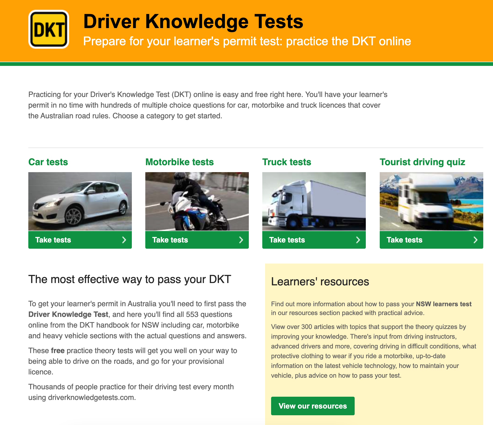
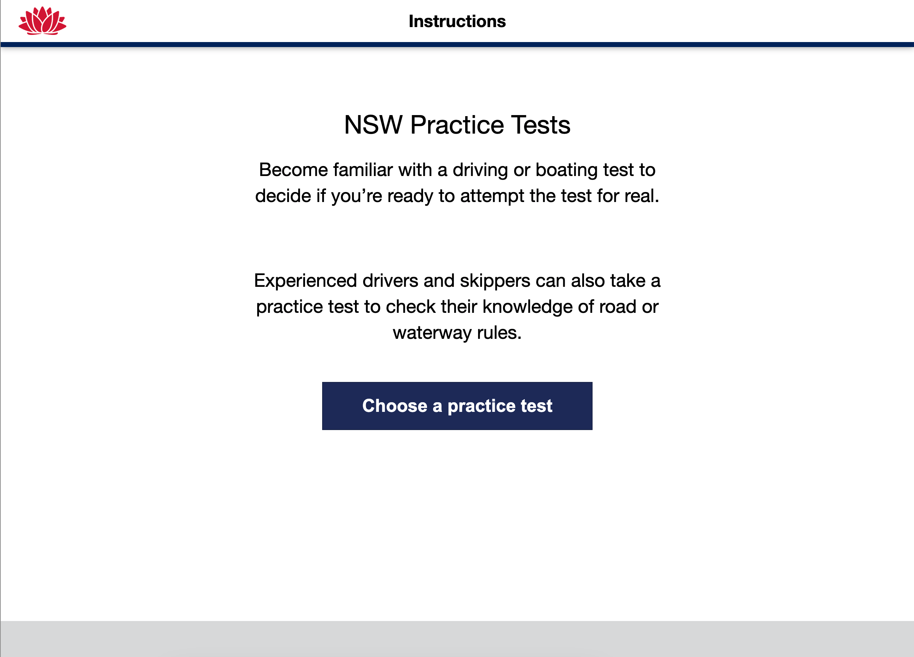

created by william v, cooper g, and donny o
created by william v, cooper g, and donny o
SafeRoadSupport
Home > Examples & Assessments
Speeding
Driving 80 mph in a 60 mph zone not only puts you at risks of fines, but also reduces your reaction time if another car suddenly stops.
Cutting Lanes
If you change lanes abruptly without signalling, another driver may not have time to react, leading to a potential accident.
Using the right lane improperly
Staying in the right lane on a highway when not overtaking can block faster-moving traffic, causing congestion and frustration among other drivers.
Avoiding fatigue
On a long road trip, driving for hours without rest can slow your reflexes. Taking a break every two hours or switching drivers helps keep you alert.
20 Question Practice Test
This Practice test can be done by anyone! It helps with your knowledge & strengths understanding .
NSW Gov L's Practice Test
This is the L Plate Practice Test provided by NSW Gov, this is helpful for anyone leading up to the examination before their L's